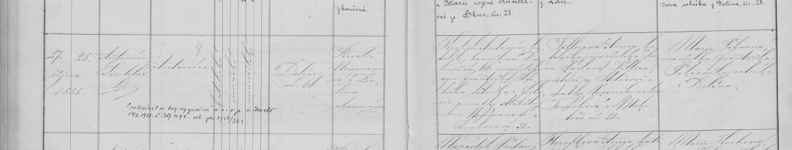

Zápisy z matrik · křest / narození
Křest Antonína Kulicha, pozdějšího legionáře (Dolín)
Dolín čp. 66 (fara Zlonice), narozen 27. 10. 1888, pokřtěn 28. 10. 1888 kaplanem Antonínem Šindelářem: Antonín, katolík, manželský. Otec Antonín Kulich, katolík, horník v Dolíně čp. 66, manželský syn Františka Kulicha, dělníka z Libovic, a Alžběty roz. Neumannové z Luníkova čp. 32. Matka Anna Tillerová (?), katolička, manželská dcera Václava Tillera, pastýře ze Stehelčevsi (?), a Nepomuceny roz. Tesařové (?) z … čp. 32. Kmotra Marie Pokorná, manželka Františka Pokorného, rolníka z Dolína; porodní bába Rosalie Neumannová z Dolína, zkoušená. Přípis: 14. 2. 1921 prohlásil vystoupení z církve (bez vyznání) u okresní správy politické v Mostě, č. 27491. Datum i místo narození se shodují s legionářem Antonínem Kulichem (databáze ČsOL). Vazba na naše Kulichy z Nové Vsi u Kralup zatím nedoložena.
| Datum | 27. 10. 1888 |
|---|---|
| Archiv | SOA Praha – Sbírka matrik (fara Zlonice) |
| Svazek | Zlonice 33 – N, O, Z Dolín 1864–1889 |
| Snímek | 115 – otevřít na portálu eBadatelna SOA Praha (vyžaduje přihlášení) |

Červeně je označené místo, ze kterého čteme. Kliknutím otevřete výřez v plném rozlišení.
Přepis originálu
Dolín čp. 66 (fara Zlonice), narozen 27. 10. 1888, pokřtěn 28. 10. 1888 kaplanem Antonínem Šindelářem: Antonín, katolík, manželský. Otec Antonín Kulich, katolík, horník v Dolíně čp. 66, manželský syn Františka Kulicha, dělníka z Libovic, a Alžběty roz. Neumannové z Luníkova čp. 32. Matka Anna Tillerová (?), katolička, manželská dcera Václava Tillera, pastýře ze Stehelčevsi (?), a Nepomuceny roz. Tesařové (?) z … čp. 32. Kmotra Marie Pokorná, manželka Františka Pokorného, rolníka z Dolína; porodní bába Rosalie Neumannová z Dolína, zkoušená. Přípis: 14. 2. 1921 prohlásil vystoupení z církve (bez vyznání) u okresní správy politické v Mostě, č. 27491. Datum i místo narození se shodují s legionářem Antonínem Kulichem (databáze ČsOL). Vazba na naše Kulichy z Nové Vsi u Kralup zatím nedoložena.
Překlad
Dolín čp. 66 (fara Zlonice), narozen 27. 10. 1888, pokřtěn 28. 10. 1888 kaplanem Antonínem Šindelářem: Antonín, katolík, manželský. Otec Antonín Kulich, katolík, horník v Dolíně čp. 66, manželský syn Františka Kulicha, dělníka z Libovic, a Alžběty roz. Neumannové z Luníkova čp. 32. Matka Anna Tillerová (?), katolička, manželská dcera Václava Tillera, pastýře ze Stehelčevsi (?), a Nepomuceny roz. Tesařové (?) z … čp. 32. Kmotra Marie Pokorná, manželka Františka Pokorného, rolníka z Dolína; porodní bába Rosalie Neumannová z Dolína, zkoušená. Přípis: 14. 2. 1921 prohlásil vystoupení z církve (bez vyznání) u okresní správy politické v Mostě, č. 27491. Datum i místo narození se shodují s legionářem Antonínem Kulichem (databáze ČsOL). Vazba na naše Kulichy z Nové Vsi u Kralup zatím nedoložena.
Nejistá čtení jsou označená (?), nečitelná místa […]. Přepis si můžete ověřit na výřezu výše.